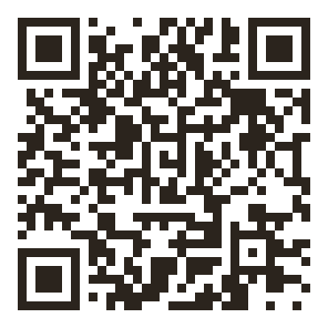
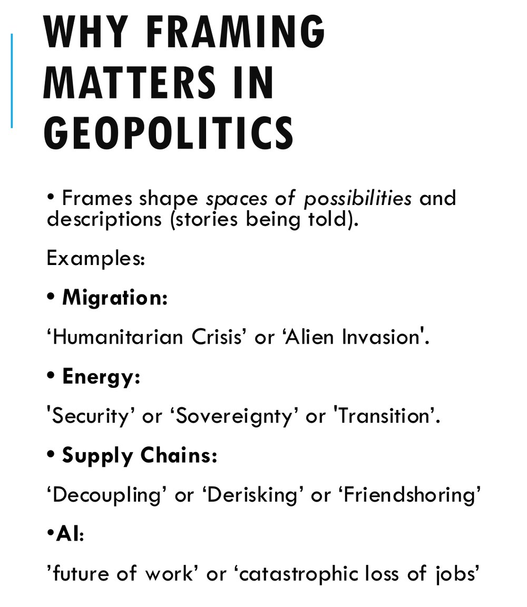
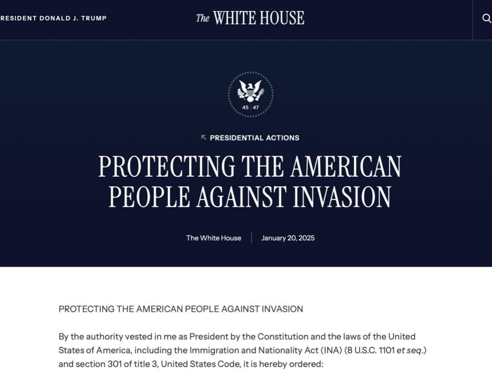
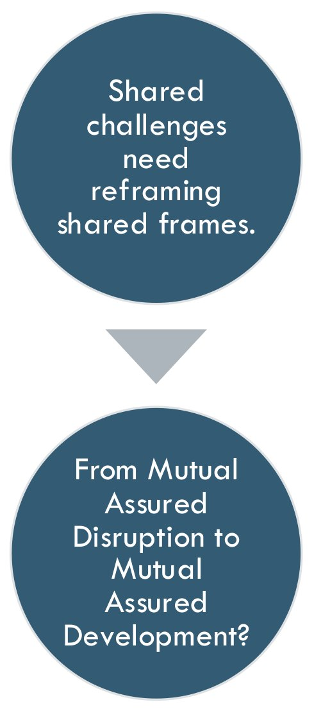

Los encuadres no se limitan a describir la realidad geopolítica: la producen. Quien fija el marco decide qué problema existe, quién lo causó, qué juicio merece y qué remedio resulta pensable. En un mundo policéntrico, esa capacidad es un recurso de poder de primer orden y un observatorio privilegiado de la mutación del orden global.
Términos. Encuadre traduce framing, la operación; marco traduce frame, la estructura que resulta de ella.
Método. Lectura sistemática de Ó Tuathail (1996), Dalby (1991) y Agnew (2003), cruzada con Goffman (1974/1986) y Entman (1993).
Corpus. Decretos, designaciones y declaraciones de actores estratégicos, 2025–2026.
Antecedente. Ponencia presentada en el 5.º Foro de Sociología de la ISA, Rabat, 2025.
Un marco nunca llega vacío: trae ya un diagnóstico, un planteamiento del problema, algo equivalente a las hipótesis de una investigación y una forma de preguntar.
Hacer aparecer algo deja otras cosas en lo oculto.
Las condiciones que hacen posible lo que una época puede decir y saber.
Cada dispositivo distribuye lo visible y lo invisible.
El marco no sólo responde preguntas: decide cuáles pueden hacerse.
«…the enhabitants tooke off his head, by cause they would not have their cuntrey discovered».«…los habitantes le cortaron la cabeza, porque no querían que su tierra fuese descubierta».Sir John Davis, 1609, cit. en Ó Tuathail, 1996, p. 1
El espacio global se vuelve visible y ordenable desde un centro.
Regiones «avanzadas» y «atrasadas» en un mismo mapa.
La «trampa territorial»: el poder sólo cabe en bloques de soberanía.
«Unremitting competition for primacy»: competencia sin tregua.
«How is it seen and scened, and to what end?»«¿Cómo se lo ve y se lo pone en escena, y con qué fin?»Ó Tuathail, 1996, p. 14
Geography is about power. […] Geography was not something already possessed by the earth but an active writing of the earth by an expanding, centralizing imperial state. It was not a noun but a verb, a geo-graphing, an earth-writing by ambitious endocolonizing and exocolonizing states who sought to seize space and organize it to fit their own cultural visions and material interests.
La geografía tiene que ver con el poder. […] La geografía no era algo que la tierra ya poseyera, sino una escritura activa de la tierra por parte de un Estado imperial que se expandía y se centralizaba. No era un sustantivo sino un verbo, un geo-grafiar, una escritura de la tierra a cargo de ambiciosos Estados endocolonizadores y exocolonizadores que buscaban apoderarse del espacio y organizarlo según sus propias visiones culturales y sus intereses materiales.
Un mapa más justo no es un mapa verdadero: es otra decisión sobre qué conservar.
ONU, 4 de septiembre de 2026. La resolución A/80/L.104, Correct the map, impulsada por la Unión Africana, pide usar proyecciones de áreas iguales, en particular Equal Earth, donde importa el tamaño comparado de los continentes. 164 votos a favor, 1 en contra (Estados Unidos), 6 abstenciones.
Mercator. Groenlandia parece del tamaño de África, que es unas catorce veces mayor.

Otros híbridos. Entre lo formal y lo popular, la divulgación: El revés de los mapas, de ARTE. Entre lo práctico y lo popular, los medios estatales y la política hecha en redes.
Al margen. Kazán, octubre de 2024: la cumbre de los BRICS tuvo una cobertura enorme, y entre sus comentaristas latinoamericanos estuvo Diego Ruzzarin (TRT Español, 24 de octubre).
Patio trasero. Dodds lo cuenta entre los esquemas geográficos de uso común, junto a «esfera de influencia» y «extranjero cercano» (2019, p. 3).
Según desde dónde. Desde febrero de 2025, Google Maps muestra «Gulf of America» en Estados Unidos, «Golfo de México» en México y ambos nombres en el resto del mundo.
Crimea. Desde 2019, Apple Maps la presenta como rusa sólo a quienes la consultan desde Rusia.
Cachemira. En la India, Google traza su frontera con línea continua; fuera de ella, con línea punteada.
Lévi-Strauss. En una aldea winnebago, cada mitad dibuja un plano distinto de la misma aldea; Žižek lee ahí un antagonismo que nadie describe desde fuera.
«What is it that’s going on here?»«¿Qué es lo que está pasando aquí?»Goffman, 1986, p. 8
Rituales de interacción, estrategias y disputas por la definición de la situación: el poder también se ejerce a escala micro.
El marco primario condensa: permite conectar comunicativamente y reduce complejidad.
Framing essentially involves selection and salience. To frame is to select some aspects of a perceived reality and make them more salient in a communicating text, in such a way as to promote a particular problem definition, causal interpretation, moral evaluation, and/or treatment recommendation for the item described.
El encuadre implica, en esencia, selección y relevancia. Encuadrar es seleccionar algunos aspectos de una realidad percibida y hacerlos más relevantes en un texto comunicativo, de modo que se promueva una definición particular del problema, una interpretación causal, una evaluación moral y/o una recomendación de tratamiento para el asunto descrito.


| Migración | «crisis humanitaria» o «invasión»‘humanitarian crisis’ or ‘alien invasion’ |
|---|---|
| Energía | «seguridad», «soberanía» o «transición»‘security’, ‘sovereignty’ or ‘transition’ |
| Cadenas de suministro | «desacoplar», «reducir riesgos» o «relocalizar entre aliados»‘decoupling’, ‘derisking’ or ‘friendshoring’ |
| Inteligencia artificial | «el futuro del trabajo» o «una pérdida catastrófica de empleos»‘future of work’ or ‘catastrophic loss of jobs’ |
| «Narcoterrorismo»marco de Washington, 2025–2026 | «Cooperación sin subordinación»contramarco de México | |
|---|---|---|
| Problema | Organizaciones terroristas extranjeras que amenazan la seguridad nacional | Violencia criminal transfronteriza: drogas hacia el norte, armas hacia el sur |
| Causa | Cárteles y gobiernos que los protegen | Demanda de drogas y tráfico de armas desde Estados Unidos |
| Juicio moral | Un enemigo de guerra | Responsabilidad compartida; la soberanía no se negocia |
| Remedio | Designación terrorista (20 feb. 2025) · ataques letales a lanchas (desde 2 sep. 2025) · captura de Maduro (3 ene. 2026) | Cooperación sin subordinación: Estados Unidos actúa «en su territorio» |
Patio trasero: Doctrina Monroe (1823) · corolario Roosevelt (1904) · «la era de la Doctrina Monroe ha terminado» (Kerry, 2013) · «patio delantero» (Biden, 2022) · «corolario Trump» (Estrategia de Seguridad Nacional, 2025)
«Whatever we know about our society, or indeed about the world in which we live, we know through the mass media».«Lo que sabemos sobre nuestra sociedad, e incluso sobre el mundo en que vivimos, lo sabemos por los medios de masas».Luhmann, 2000, p. 1
It is not a case of choosing those [faces] which, to the best of one’s judgment, are really the prettiest, nor even those which average opinion genuinely thinks the prettiest. We have reached the third degree where we devote our intelligences to anticipating what average opinion expects the average opinion to be. And there are some, I believe, who practise the fourth, fifth and higher degrees.
No se trata de elegir aquellos [rostros] que, a juicio propio, son realmente los más bonitos, ni siquiera los que la opinión media considera genuinamente los más bonitos. Hemos llegado al tercer grado, en el que dedicamos nuestra inteligencia a anticipar lo que la opinión media espera que sea la opinión media. Y hay quienes, creo, practican el cuarto, el quinto y grados superiores.
Elijo el rostro que me parece más bello.
Elijo el que creo que los demás preferirán.
Anticipo lo que la opinión media espera que sea la opinión media.
Aplicar el análisis de marcos para pasar de las latencias a las estructuras visibles.
Observar cómo se estabilizan las cadenas de observaciones, decisiones y expectativas de primer y segundo orden.
Entender cómo se forman las narrativas.
«…the geopolitical imagination must once more be reconstituted».«…la imaginación geopolítica debe reconstituirse una vez más».Agnew, 2003, p. 115
¿Una episteme, marco de los marcos? Sin crítica de sus condiciones de posibilidad, la inteligencia y la agencia sólo recorren el camino ya trazado por lo decible y lo posible.
Quien nombra escribe el mapa.
La categoría trae consigo su remedio.
El orden se sostiene en lo que cada actor espera que esperen los demás.
En un mundo policéntrico ningún actor impone un marco único. El orden muta, y la competencia entre marcos es su forma visible.
con los fenómenos sociales
un saber que sabe desde dónde mira
los presupuestos que sostienen un fenómeno, contrastados con las posibilidades no actualizadas
Identificar un marco abre la posibilidad de cambiarlo. Si la inteligencia artificial deja de encuadrarse como carrera armamentista («quien lidere dominará») y se encuadra como riesgo compartido, cambia lo que cuenta como solución. Quizá la disrupción mutua asegurada pueda reencuadrarse como desarrollo mutuo asegurado.

Agnew, J. (2003). Geopolitics: Re-visioning world politics (2.ª ed.). Routledge.
Ashby, W. R. (1956). An introduction to cybernetics. Chapman & Hall.
Cardiel Herrera, J. (2025, julio). Critical geopolitics, frame analysis, and second-order observation [Ponencia]. 5th ISA Forum of Sociology, Rabat, Marruecos.
Dalby, S. (1991). Critical geopolitics: Discourse, difference, and dissent. Environment and Planning D: Society and Space, 9(3), 261–283. https://doi.org/10.1068/d090261
Deleuze, G. (1989). Qu’est-ce qu’un dispositif? En Michel Foucault philosophe: Rencontre internationale, Paris, 9, 10, 11 janvier 1988 (pp. 185–195). Seuil.
Dodds, K. (2019). Geopolitics: A very short introduction (3.ª ed.). Oxford University Press.
Entman, R. M. (1993). Framing: Toward clarification of a fractured paradigm. Journal of Communication, 43(4), 51–58. https://doi.org/10.1111/j.1460-2466.1993.tb01304.x
Farrell, H., y Newman, A. L. (2019). Weaponized interdependence: How global economic networks shape state coercion. International Security, 44(1), 42–79. https://doi.org/10.1162/isec_a_00351
Fortín, C., Heine, J. y Ominami, C. (Eds.). (2021). El no alineamiento activo y América Latina: Una doctrina para el nuevo siglo. Catalonia.
Foucault, M. (1966). Les mots et les choses: Une archéologie des sciences humaines. Gallimard.
Foucault, M. (1969). L’archéologie du savoir. Gallimard.
Goffman, E. (1986). Frame analysis: An essay on the organization of experience. Northeastern University Press. (Obra original publicada en 1974)
Heidegger, M. (1954). Die Frage nach der Technik. En Vorträge und Aufsätze. Neske.
Kant, I. (1781). Kritik der reinen Vernunft. Hartknoch.
Keynes, J. M. (1936). The general theory of employment, interest and money. Macmillan.
Latour, B. (1999). Pandora’s hope: Essays on the reality of science studies. Harvard University Press.
Lévi-Strauss, C. (1958). Les organisations dualistes existent-elles? En Anthropologie structurale. Plon.
Luhmann, N. (2000). The reality of the mass media (K. Cross, Trad.). Stanford University Press. (Obra original publicada en 1996)
Nietzsche, F. (1883). Also sprach Zarathustra: Ein Buch für Alle und Keinen. Schmeitzner.
Ó Tuathail, G. (1996). Critical geopolitics: The politics of writing global space. Routledge.
Pasquale, F. (2015). The black box society: The secret algorithms that control money and information. Harvard University Press.
Žižek, S. (2024). Against progress. Bloomsbury.
Adams, M. (2025, 2 de septiembre). US military strike on vessel carrying drugs from Venezuela kills 11. Stars and Stripes.
Al Jazeera English. (2017, 2 de marzo). Edward Said – Framed: The politics of stereotypes in news [Video]. YouTube. https://youtu.be/4QYrAqrpshw
Arista, L. (2025, 21 de enero). Trump puede actuar contra cárteles en EU; se defenderá soberanía, dice Sheinbaum. Expansión Política.
ARTE. (2024). ¿Cuánto poder tienen los mapas? [Episodio de 42, la respuesta a casi todo]. https://www.arte.tv/es/videos/115510-015-A/
Asamblea General de las Naciones Unidas. (2026, 4 de septiembre). General Assembly adopts text to ‘Correct the Map’ (GA/12779) [Comunicado de prensa].
Bensinger, G. (2020, 14 de febrero). Google redraws the borders on maps depending on who’s looking. The Washington Post.
Biden dice que Latinoamérica no es el patio trasero de EE. UU. sino el delantero. (2022, enero). Teleamazonas.
Casa Blanca. (2025a, 20 de enero). Protecting the American people against invasion [Orden ejecutiva].
Casa Blanca. (2025b, diciembre). National security strategy of the United States of America.
Casa Blanca. (2026, 29 de septiembre). Fact sheet: President Donald J. Trump inaugurates the era of Super Intelligence.
Comisión Europea. (2023, 30 de marzo). Speech by President von der Leyen on EU-China relations to the Mercator Institute for China Studies and the European Policy Centre.
Departamento de Estado de los Estados Unidos. (2025). Foreign Terrorist Organization designations of Tren de Aragua, Mara Salvatrucha, Cartel de Sinaloa, Cartel de Jalisco Nueva Generacion, Carteles Unidos, Cartel del Noreste, Cartel del Golfo, and La Nueva Familia Michoacana. Federal Register, 90(33), 10030–10031.
Euronews. (2019, 27 de noviembre). Apple Maps shows annexed Crimea as Russian for Russian users.
Exec. Order No. 14172, 90 Fed. Reg. 8629 (31 de enero de 2025). Restoring names that honor American greatness.
García Durán, C. (2025, 30 de enero). Esto dice la carta de Sheinbaum a Google por el cambio del Golfo de México a ‘América’. Publimetro México.
Google Maps now shows ‘Gulf of America’ for U.S. users. (2025, 11 de febrero). Boston.com.
Kerry: Era of Monroe Doctrine in Latin America is over. (2013, 19 de noviembre). UPI.
Maduro, wife captured by American forces; U.S. to oversee Venezuela ahead of new government, Trump says. (2026, 3 de enero). USNI News.
Mexican president says U.S. should be called “América Mexicana” in Trump clapback. (2025, 8 de enero). Axios.
TRT Español. (2024, 24 de octubre). Diego Ruzzarin analiza la cumbre de los BRICS 2024 y el papel de Latinoamérica [Video]. YouTube.
Xi proposes Global Governance Initiative at largest-ever SCO summit. (2025, 2 de septiembre). China Daily.
Esta ponencia se terminó de exponer en el Salón 14 el día 23 de octubre de 2026, durante el XXXIX Congreso Anual de la amei. Se compuso en tipos Garamond y Cinzel. Las láminas reproducen grabados de los siglos XVI al XVIII y un ánfora ática del siglo V a. C., de dominio público; el sello de Jano procede de las Illustrium imagines (1517).
Jorge Cardiel Herrera · Universidad Nacional Autónoma de México
jorgecardiel@comunidad.unam.mx